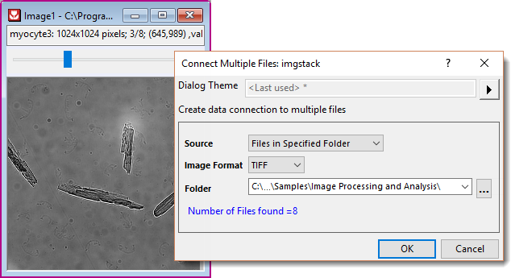
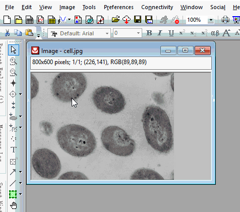
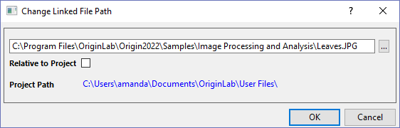

Bilder und Videos importieren
Import-Images
Bevor Sie Bildanalyse- und verarbeitungsroutinen durchführen, müssen Sie Ihr Bild in Origin importieren/öffnen.
Bild und Video in Bildfenster importieren
Bild(er)/Video importieren/öffnen
- Wählen Sie im Menü Datei: Neu: Bild: Bild/Video oder drücken Sie Strg+Alt+I.
Auf diese Weise können Sie einzelne Bild-/Videodateien importieren.
Oder
- Sie wählen im Menü Datei: Öffnen und wählen Bilder in der Auswahlliste Dateityp.
- Navigieren Sie und wählen Sie eine einzelne Bilddatei aus oder drücken Sie die Strg-Taste, um mehrere Dateien im aufgerufenen Dateibrowser auszuwählen.
Auf diese Weise können Sie mehrere Bilddateien gleichzeitig importieren. Jedes ausgewählte Bild wird in ein Bildfenster geladen.
Oder
- Ziehen Sie eine Bilddatei per Drag&Drop in den Origin-Arbeitsbereich.
Das Bild wird im Bildfenster geöffnet.
Unterstützte Bildtypen mit einzelnem Frame
Die folgende Tabelle listet die Bildtypen auf, die ins Bildfenster oder Matrixfenster importiert werden können.
| Bildtyp |
Erweiterung |
Unterstützt von |
| Bitmap |
*.bmp, *.dib |
Beides |
| Graphics Interchange Format |
*.gif |
Beides |
| Joint Photographic Experts Group |
*.jpg, *.jpe, *.jpeg |
Beides |
| Zsoft PC Paintbrush Bitmap |
*.pcx |
Matrixfenster |
| JPEG 2000 |
*jp2 |
Bildfenster |
| Portable Network Graphics |
*.png |
Beides |
| Portable Images |
*pbm, *.pgm, *ppm |
Bildfenster |
| Truevision Targa |
*.tga |
Matrixfenster |
| Adobe Photoshop |
*.psd |
Matrixfenster |
| Tag Image File |
*.tif, *tiff |
Beides |
| GeoTIFF |
*.tif |
Beides |
| Windows MetaFile |
*.wmf |
Matrixfenster |
| Enhanced Metafile |
*.emf |
Matrixfenster |
Unterstützte Bild- und Videotypen mit mehreren Frames
Die folgende Tabelle listet die Bild- und Videotypen mit mehreren Frames und die Videotypen, die ins Bildfenster importiert werden können.
| Dateityp |
Erweiterung |
| Graphics Interchange Format |
*.gif |
| Tag Image File |
*.tif, *tiff |
| GeoTIFF |
*.tif |
| Video |
*.avi,*.mov,*.mp4 |
Mehrere Bilder der gleichen Dimension in ein Fenster importieren
- Wählen Sie im Menü Datei: Neu: Bild: Mehrere Bilddateien oder drücken Sie Strg+Alt+T.
Der Dialog imgstack wird geöffnet. Sie können
-
- alle Dateien im angegebenen Ordner importieren oder
- jegliche andere Dateien von unterschiedlichen Pfaden wählen.
Die ausgewählten Bilddateien müssen der gleiche Bildtyp sein und die gleichen Dimension haben. Sie werden in einem Bildfenster gestapelt, ein Frame für jedes Bild.
- 
 |
Um mehrere GetTIFF-Bilder in ein Fenster zu importieren, wählen Sie im Dialog imgstack die Option Festgelegte Dateien in der Auswahlliste Quelle und fügen Sie den importierten Dateinamen durch Auswahl im Ordner hinzu.
|
Ein leeres Bildfenster erstellen
- Wählen Sie im Menü Datei: Neu: Bild: Leeres Fenster.
ODER
- Klicken Sie auf die Schaltfläche Neues Bild
 auf der Standardsymbolleiste.
auf der Standardsymbolleiste.
- Sie können mit der rechten Maustaste in das Bildfenster klicken und Import auswählen, um ein Bild zu importieren. Oder Sie fügen ein Bild in das leere Fenster ein.
Ein Online-Bild ins Bildfenster importieren
- Wählen Sie im Menü Datei: Neu: Bild: Webbild oder drücken Sie Strg+Alt+L.
ODER
- Klicken Sie mit der rechten Maustaste in ein leeres Bildfenster und wählen Sie Aus Web importieren.
- Sie können mit der rechten Maustaste auf ein Online-Bild klicken und Bildlink kopieren/Bildadresse kopieren auswählen, um den Bildlink zu erhalten. Es werden die Formate PNG und TIFF unterstützt.
Ein Bild ins Matrixfenster importieren
- Wählen Sie bei aktivem Matrixfenster Daten: Aus Datei importieren: Bild in Matrix.
- Legen Sie die Auswahlliste Dateityp nach Bedarf fest. Navigieren Sie zum Bildordner und wählen Sie Ihre Datei(en). Klicken Sie auf OK. Der Dialog der X-Funktion impImage wird geöffnet.
- Passen Sie die Importoptionen nach Bedarf an und klicken Sie auf OK.
Informationen zum Bearbeiten, Analysieren und Zeichnen von Matrixbildern finden Sie unter Mit Bildern im Matrixfenster arbeiten.
Speichern und Neuladen
- Die Bilddatei wird über den Datenkonnektor importiert. Wie bei anderen Konnektoren wird ein Bild, falls es zu groß ist (Schwellenwert der Dateigröße: @FSE KB), beim Speichern des Projekts ausgeschlossen. Nur die Verbindung zwischen Quellbild und dem Projekt wird beibehalten.
- Wenn Sie die Projektgröße reduzieren möchten, können Sie diese Funktion einschalten, indem Sie mit der rechten Maustaste in das Bildfenster klicken und Verknüpfte Datei im Kontextmenü aktivieren.
- Wenn Sie dieses Projekt erneut öffnen, sehen Sie ein leeres Bildfenster. Klicken Sie mit der rechten Maustaste in das Bildfenster und wählen Sie Import ODER drücken Sie Strg+4, um die Bilddatei erneut zu laden.
- 
- Klicken Sie mit der rechten Maustaste in ein Bildfenster und wählen Sie Quelldateipfad. Sie können den aktuellen Pfad anzeigen oder den Bildpfad ändern, um ein anderes Bild zu importieren.
- 
-
- Wenn das aktuelle Projekt gespeichert wurde, können Sie das Kontrollkästchen Relativ zum Projekt aktivieren, um die Bildquelle relativ zum Projektpfad zu speichern.
- Beim Importieren eines Bildes von einem Pfad, der ein Sibling- oder Unterpfad des aktuellen Projektpfads ist, wird Relativ zum Projekt automatisch aktiviert.